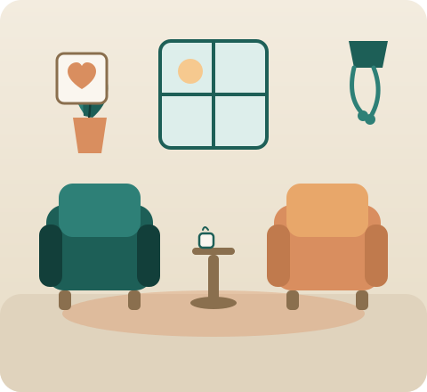
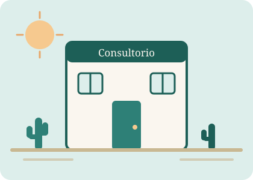

Ansiedad y estrés
Herramientas para calmar la mente, regular las emociones y recuperar el descanso cuando la preocupación no te deja avanzar.
Psicólogo en Mexicali, B.C. · Cédula profesional SEP
Hay etapas de la vida en las que necesitamos apoyo: para cuidar nuestras relaciones personales o de pareja, reencontrar nuestro propósito y volver a sentirnos en calma. No tienes que atravesarlas en soledad.

Sobre mí
Soy Licenciado en Psicología, registrado en el Registro Nacional de Profesionistas de la SEP. Acompaño a personas y parejas que atraviesan momentos de ansiedad, estrés, tristeza o desconexión, y que buscan volver a sentirse dueñas de su vida.
Mi trabajo se centra en ayudarte a regular la ansiedad y la depresión, fortalecer tu autoestima, aprender a poner límites sanos y construir relaciones de pareja más saludables. Creo en una terapia cercana, práctica y basada en la confianza.
Especialidades
Cada proceso es distinto. Estas son las áreas en las que trabajo con más frecuencia.
Herramientas para calmar la mente, regular las emociones y recuperar el descanso cuando la preocupación no te deja avanzar.
Acompañamiento para transitar la tristeza profunda, reconectar con lo que te importa y recuperar tu energía día a día.
Un espacio neutral para mejorar la comunicación, sanar heridas y construir una relación más sólida y saludable.
Trabajo profundo para fortalecer la manera en que te ves, te hablas y te tratas, y dejar atrás la autocrítica constante.
Aprende a decir que no sin culpa, a proteger tu tiempo y energía, y a relacionarte desde el respeto mutuo.
Cuando sientes que perdiste el rumbo, te acompaño a reencontrar tu dirección y a tomar decisiones con claridad.
Cómo trabajo
Platicamos 15 minutos por teléfono, sin costo ni compromiso, para conocer tu situación y resolver tus dudas.
Exploramos a fondo lo que estás viviendo y definimos juntos los objetivos de tu proceso terapéutico.
Sesiones periódicas, presenciales o en línea, con herramientas prácticas que aplicas en tu vida diaria.
Revisamos tus avances de forma constante hasta que alcances tus objetivos y te sientas en equilibrio.

Un consultorio privado, cómodo y discreto en Mexicali, Baja California, pensado para que te sientas en confianza desde el primer momento.
Sesiones por videollamada con la misma calidad y confidencialidad, desde donde estés. Ideal si vives fuera de la ciudad o tienes poco tiempo.
Solicita tu consulta gratuita de 15 minutos. Sin costo, sin compromiso.
Preguntas frecuentes
Si la ansiedad, la tristeza o los conflictos en tus relaciones están afectando tu día a día, tu descanso o tu trabajo, la terapia puede ayudarte. No necesitas estar "muy mal" para buscar apoyo: la terapia también sirve para conocerte mejor y prevenir.
Las sesiones duran aproximadamente 50 minutos. Lo más común es empezar con una sesión por semana y ajustar la frecuencia según tus avances y necesidades.
Sí. La evidencia muestra que la terapia en línea es igual de efectiva para la mayoría de los casos. Solo necesitas un lugar privado, conexión a internet y disposición para trabajar en ti.
Absolutamente. La confidencialidad es la base de la terapia y está protegida por la ética profesional. Lo que compartas en sesión queda entre nosotros, salvo las excepciones que marca la ley.
Sí, es muy común que uno de los dos llegue con más dudas. En la primera sesión creamos un espacio neutral donde ambos puedan expresarse; muchas parejas descubren ahí el valor del proceso.
Puedes llamar al 800 283 2791 ext. 33, escribirme por WhatsApp o llenar el formulario de contacto. Te responderé lo antes posible para coordinar tu consulta gratuita de 15 minutos.
Contacto
Escríbeme y te responderé personalmente para coordinar tu primera consulta de 15 minutos sin costo.